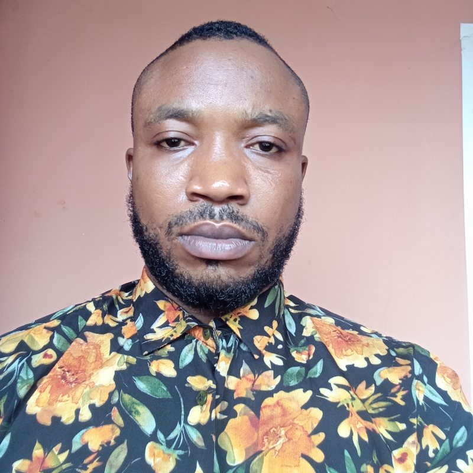

Oto-obong Inyang | WDD 130

Welcome To My Portfolio
Hello, I'm Oto-obong Inyang, a Data Analyst and Software Development student from Nigeria. I hold a BSc degree in Human Anatomy and I am a certified Data Analyst currently studying Software Development at BYU-Pathway Worldwide. My background combines analytical thinking, technology, education, and client-focused experience.I am passionate about using data and technology to solve problems, improve decision-making, and create practical solutions. I enjoy learning new technologies and continuously developing my skills in software development and data analysis.
What I Do
My experience includes working as a Data Entry Clerk, Lecturer, Personal Coach, and Tutor. These roles have helped me develop strong skills in communication, problem-solving organization attention to detail, and working effectively with people.As a Data Analyst, I have worked with tools such as Microsoft Excel, SQL, Python, and Power BI to analyze data and create insightful dashboards that can support business decisions.I am also developing my skills in HTML, CSS, Python, and software development, with the goal of building useful and user-friendly digital solutions.
My Approach
I believe in continuous learning, attention to detail, and turning challenges into opportunities to grow. I approach every project with curiosity, professionalism, and a willingness to learn. Whether I am analyzing data, developing software, or helping someone understand a difficult concept, my goal is to create clear, practical, and meaningful results.